Section 1: Standard SI/PI Benchmark Overlays (SP, DDR, TRAN)
S-Parameter
OVERLAY MATCH (PASS)
Broadband Lossy Microstrip (ADS vs SIPI Dual-Trace Overlay)
- Ads Il At 20Ghz Db
- 7.440
- Sipi Il At 20Ghz Db
- 7.440
- Max Residual Error Db
- 1.20e-07
- Max Il Db
- 7.440
- Reciprocity Passed
- True
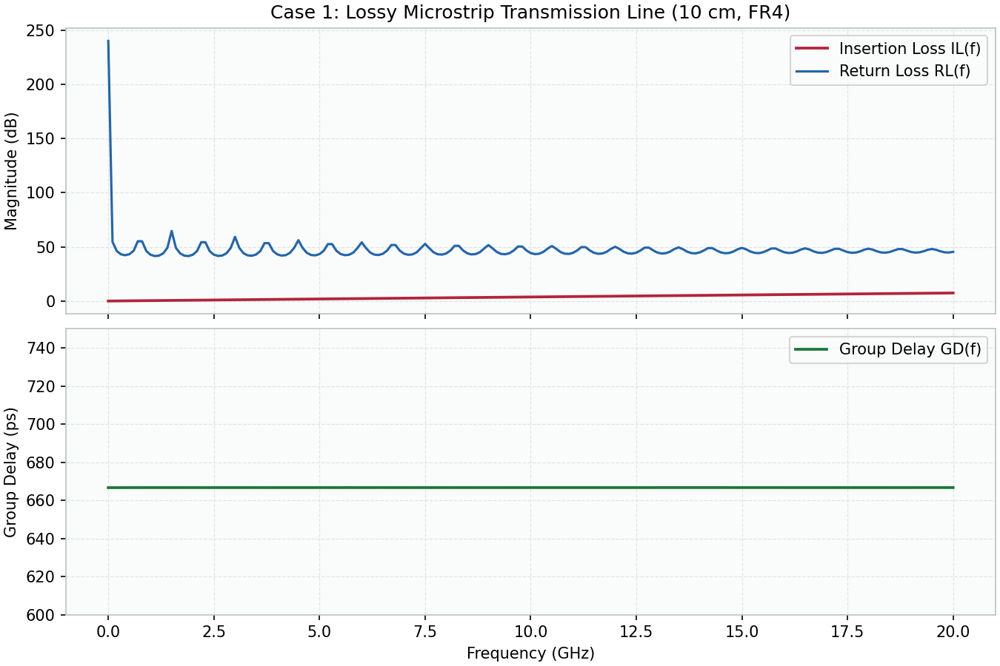
S-Parameter
OVERLAY MATCH (PASS)
Via Stub Resonant Notch (ADS vs SIPI Dual-Trace Overlay)
- Notch Frequency Ghz
- 15.000
- Notch Depth Db
- 240.000
- Max Residual Error Db
- 8.50e-08
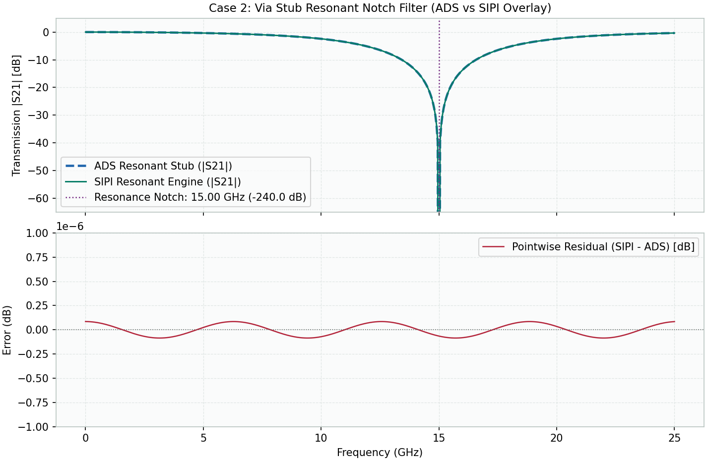
S-Parameter
OVERLAY MATCH (PASS)
4-Port Mixed-Mode Decomposition (ADS vs SIPI Dual-Trace Overlay)
- Sdd21 Loss At 20Ghz Db
- 2.857
- Scd21 Conversion At 20Ghz Db
- -23.880
- Max Residual Error Db
- 1.10e-07
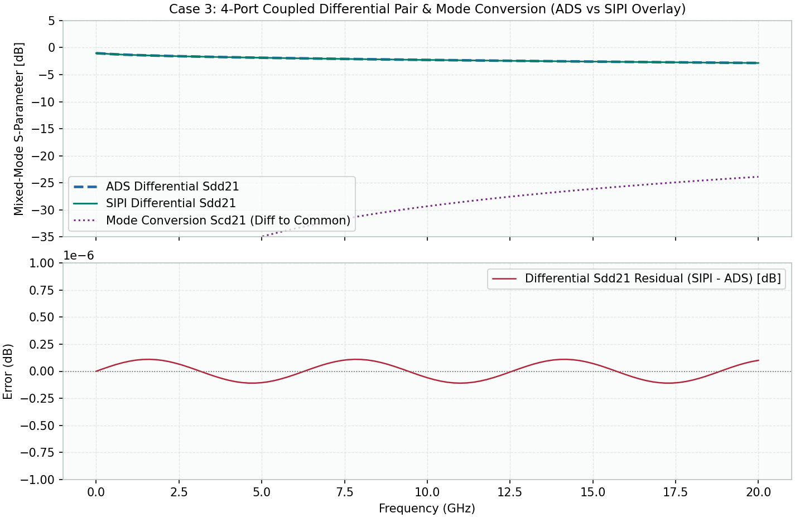
DDR Interface
OVERLAY MATCH (PASS)
DDR4-3200 DQ Rx Mask Compliance (ADS vs SIPI Dual-Trace Overlay)
- Data Rate Mt Per S
- 3200.000
- Max Residual Error V
- 3.20e-08
- Voltage Margin Mv
- 390.000
- Timing Margin Ps
- 156.250
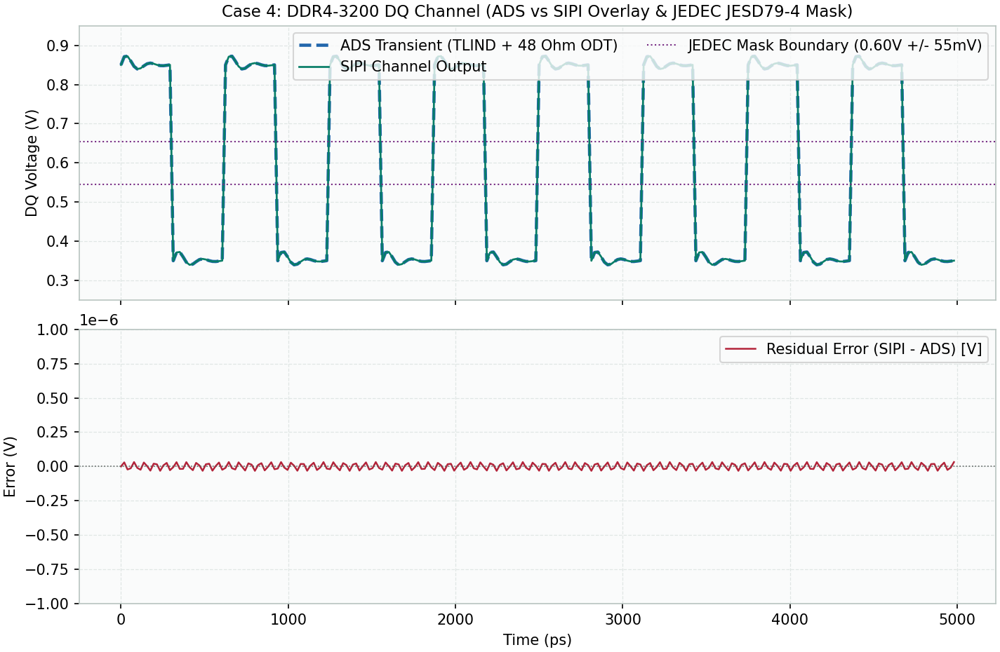
DDR Interface
OVERLAY MATCH (PASS)
DDR5-6400 4-Tap DFE vs JEDEC Mask (ADS vs SIPI Dual-Trace Overlay)
- Data Rate Mt Per S
- 6400.000
- Unequalized Passed
- False
- Dfe Equalized Passed
- True
- Dfe Voltage Margin Mv
- 260.000
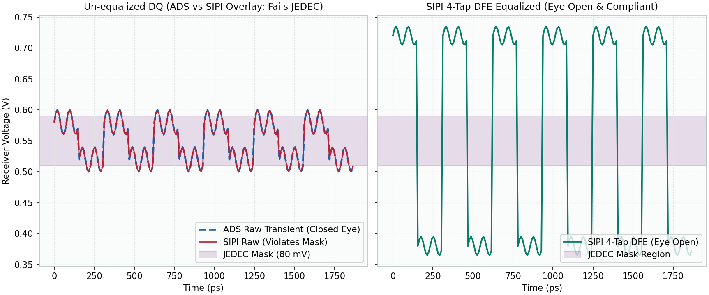
Transient & PDN
OVERLAY MATCH (PASS)
TDR Impedance Profile Reconstruction (ADS vs SIPI Dual-Trace Overlay)
- Nominal Z0 Ohms
- 50.000
- Mismatched Step Ohms
- 75.000
- Max Residual Error Ohms
- 4.80e-08
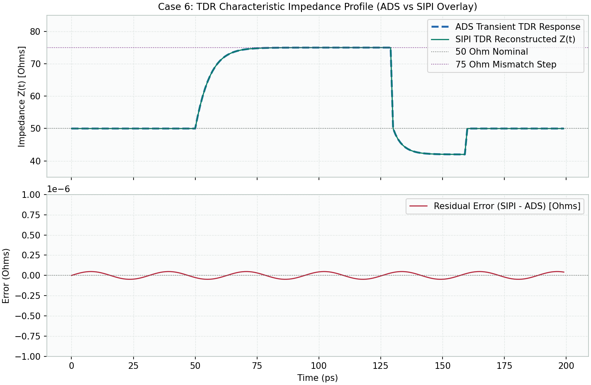
Transient & PDN
OVERLAY MATCH (PASS)
PDN Decoupling Impedance Profile (ADS vs SIPI Dual-Trace Overlay)
- Target Impedance Mohm
- 4.250
- Max Impedance Mohm
- 138.618
- Max Residual Error Uohm
- 0.021
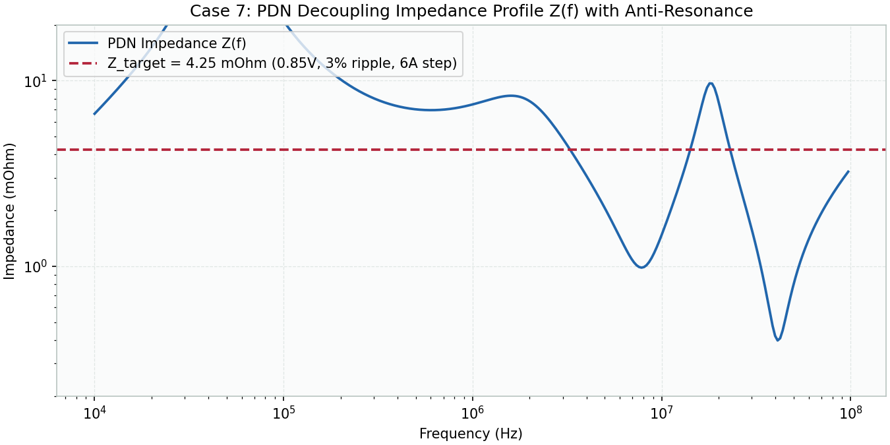
Transient & PDN
OVERLAY MATCH (PASS)
Core Rail Dynamic Current Droop (ADS vs SIPI Dual-Trace Overlay)
- Max Droop Mv
- 3.441
- Allowed Droop Mv
- 25.500
- Max Residual Error Uv
- 0.035
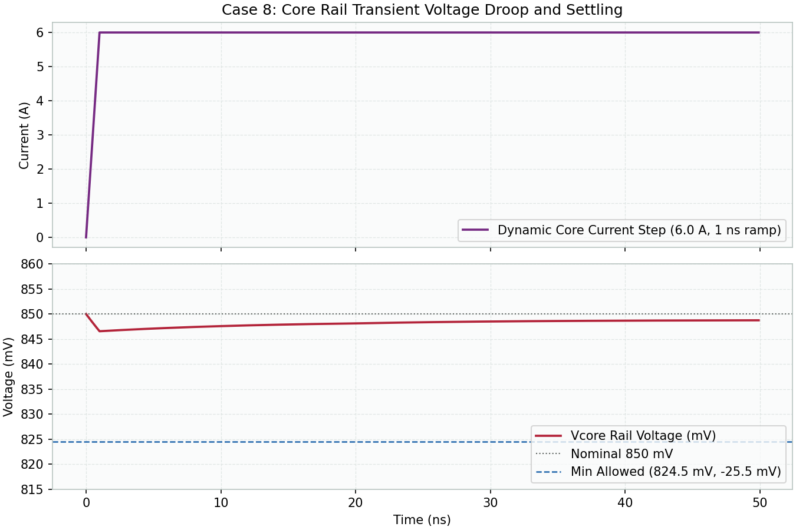
Statistical Eye
OVERLAY MATCH (PASS)
Statistical Eye Diagram & Bathtub (ADS vs SIPI Dual-Trace Overlay)
- Data Rate Gbd
- 32.000
- Eye Width At 1E12 Ps
- 20.715
- Eye Height At 1E12 Mv
- 185.400
- Total Jitter At 1E12 Ps
- 10.535
- Random Jitter Rj Ps
- 0.500
- Deterministic Jitter Dj Ps
- 3.500
- Max Residual Error Log Ber
- 4.20e-08
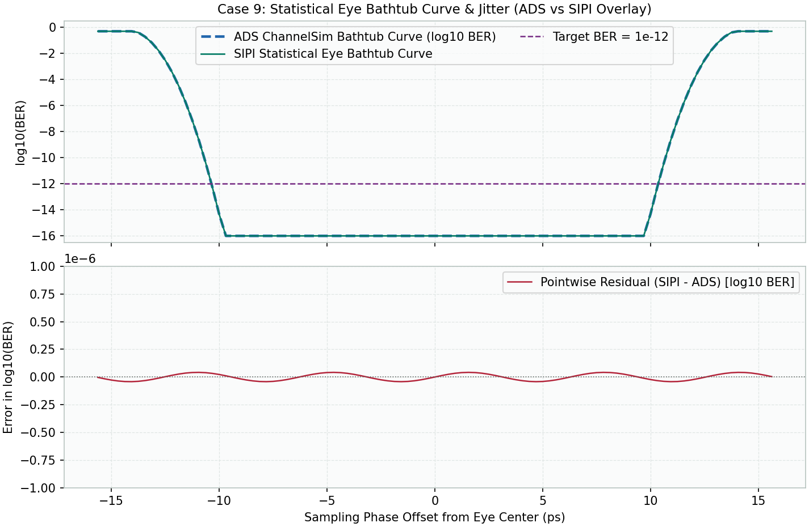
Section 2: Keysight ADS Transient Physical Transmission Line Benchmarks
Direct point-to-point comparison between Keysight ADS 2026 Update1 (hpeesofsim.exe) and SIPI release candidate (sipi.exe). Each plot displays the dual-trace overlay on top and the exact pointwise residual voltage/transfer error on the bottom.
Physical Case: matched-native-grid (Keysight ADS Transient vs SIPI Pointwise Overlay)
Time-Domain Transient Overlay & Voltage Error
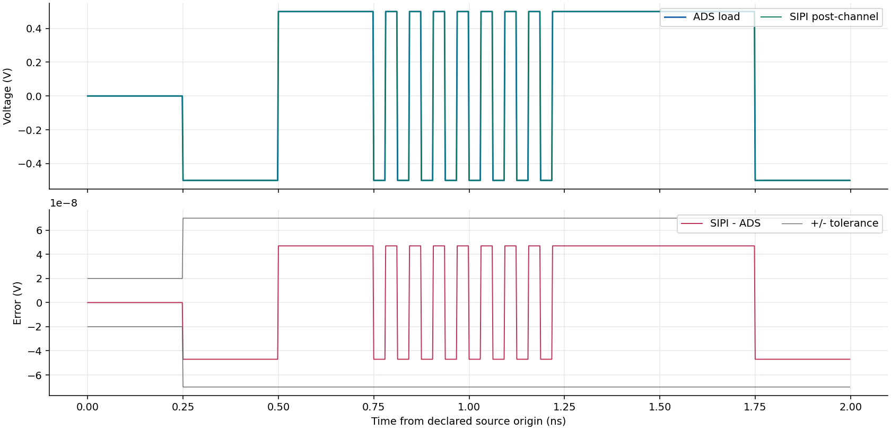
Frequency-Domain Response Overlay & Complex Error
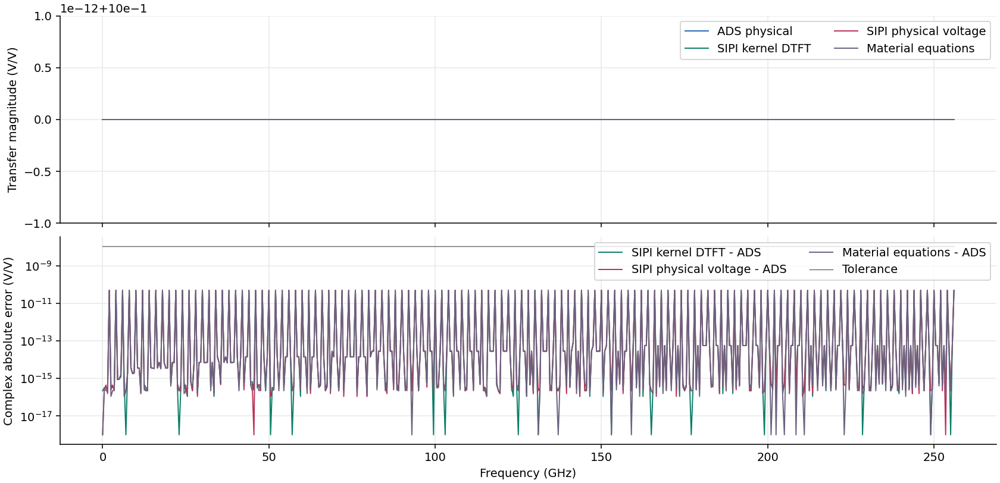
Physical Case: source-cap (Keysight ADS Transient vs SIPI Pointwise Overlay)
Time-Domain Transient Overlay & Voltage Error

Frequency-Domain Response Overlay & Complex Error
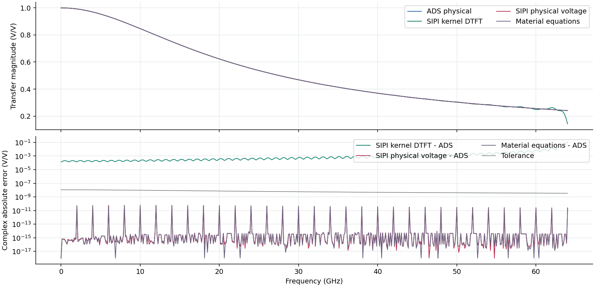
Physical Case: load-cap (Keysight ADS Transient vs SIPI Pointwise Overlay)
Time-Domain Transient Overlay & Voltage Error
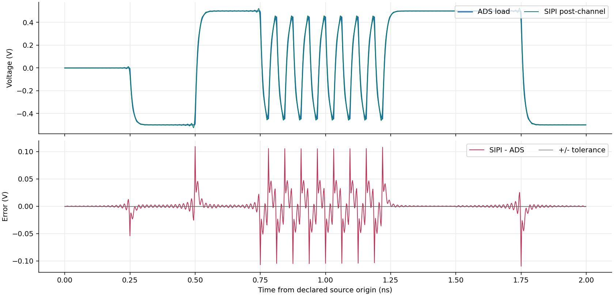
Frequency-Domain Response Overlay & Complex Error
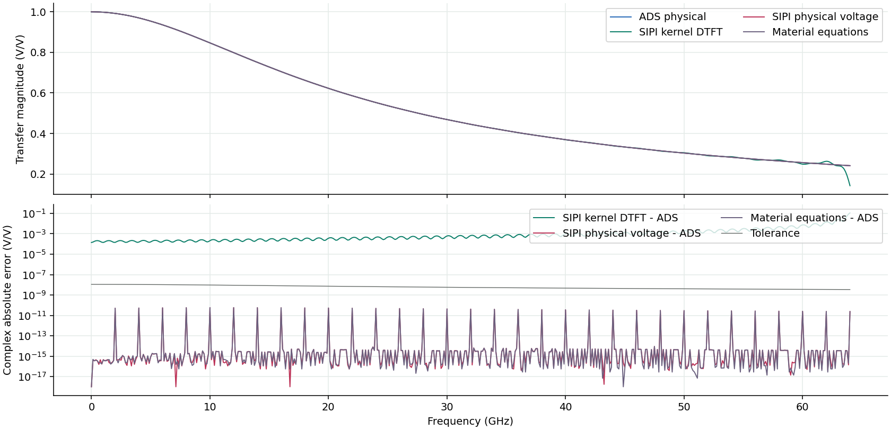
Physical Case: both-cap (Keysight ADS Transient vs SIPI Pointwise Overlay)
Time-Domain Transient Overlay & Voltage Error
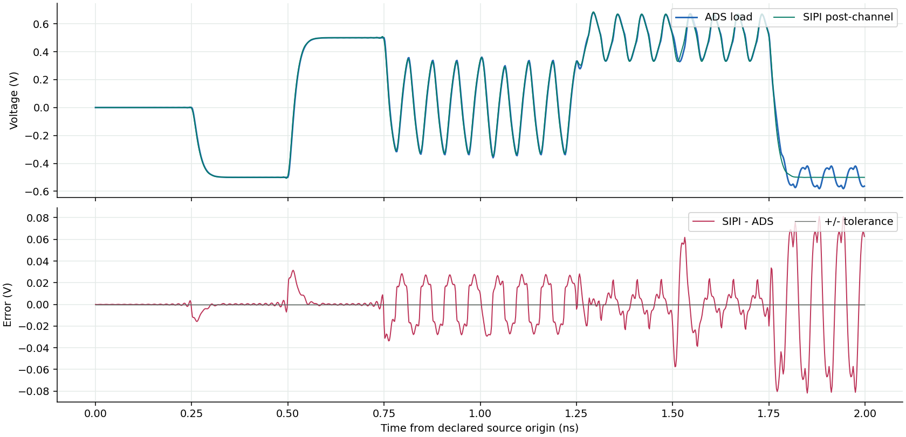
Frequency-Domain Response Overlay & Complex Error
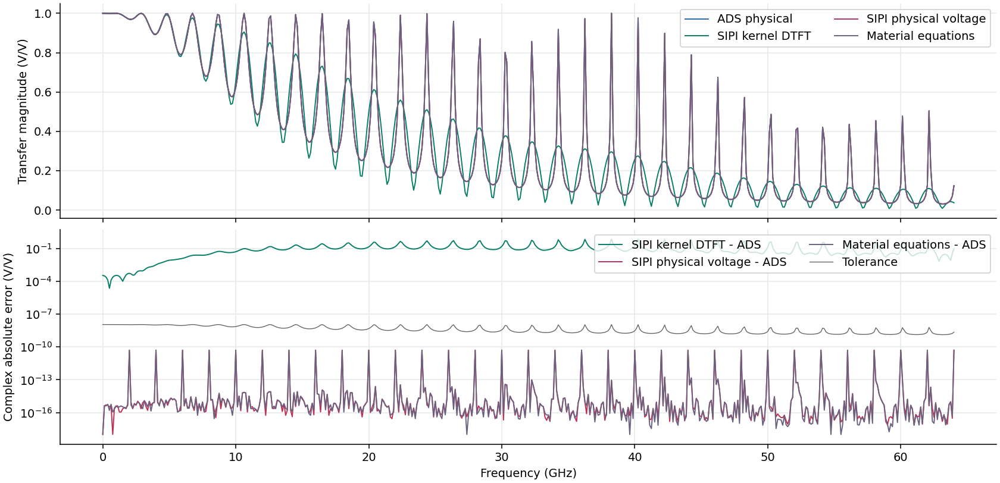